This section showcases the operational views across each of the eight official user roles specified in Appendix H of the Garis Panduan Micro-Credential UTeM Versi 1.0, plus external verifier and public discovery interfaces. All 39 captured views strictly follow the Linear-Precision v3 design system, displaying consistent typography (Plus Jakarta Sans), crisp card outlines (#090a0f), high-contrast Deep Cobalt Navy navigation (#0b1a3d), and clear semantic status tags without generic emojis or arbitrary iconography (D-53).
6.1 Participant / Student (P8)
Student views provide a focused, low-cognitive-load experience for browsing offerings, tracking learning achievements, applying for credit transfers, and managing verifiable credentials.
Figure 6.1a: Student Dashboard (p8_dashboard_default.png)
Learner command center displaying enrolled micro-credential cohorts, real-time module progress meters, upcoming learning milestones, and rapid access to academic achievement records.Figure 6.1b: Student Learning Results (p8_results_default.png)
Detailed grade and achievement breakdown distinguishing provisional module marks imported from UCreds from verified academic outcomes, maintaining transparent auditability for participants.
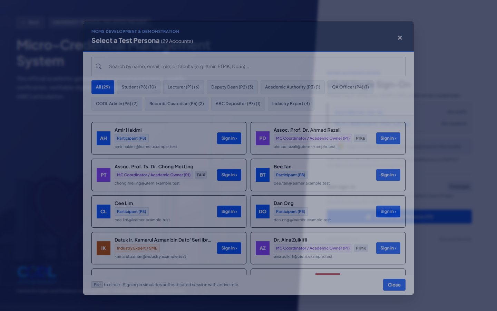
Figure 6.1c: Credit Transfer Application Form (p8_transfer_new.png)
Structured application interface implementing Appendix F6: selecting deposited Available credits, target degree programme, course component, and uploading verified evidentiary documents.Figure 6.1d: Credit Transfer Application Status (p8_transfer_detail.png)
Comprehensive audit trail showing real-time governance status (under evaluation, provisional redemption), 9-criterion outcome feedback, and official Senate approval notifications.
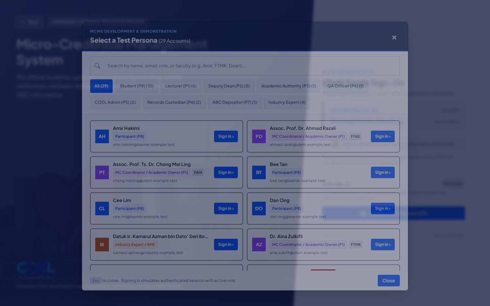
Figure 6.1e: Student Digital Credentials Wallet (p8_credentials_default.png)
Digital badge and certificate vault allowing students to inspect cryptographic credentials, copy Crockford Base32 verification codes, download signed proofs, and manage external sharing links.
6.2 Course Coordinator / Lecturer (P1)
Academic faculty members author micro-credential proposals, manage cohort delivery, sign off participant completion, and track quality improvement indicators.
Figure 6.2a: Course Coordinator Dashboard (p1_dashboard_default.png)
Lecturer workspace summarizing owned offerings, active cohorts requiring grade submission, colleague peer review invitations, and pending quality improvement milestones.Figure 6.2b: Micro-Credential Proposals Portfolio (p1_proposals_list.png)
Comprehensive listing of micro-credential curricula across lifecycle phases (Draft, In Review, Endorsed, Senate Approved) with explicit category tags (UMC, SAMC, MCE).Figure 6.2c: Guided Proposal Workspace (p1_proposal_workspace.png)
Linear Process Stepper showing multi-phase governance (Step 01 Submission, Step 02 Dean Endorsement, Step 03 CODL Verification, Step 04 Senate Endorsement) with live SLT checks and Appendix A fields.Figure 6.2d: Peer Review Invitations Queue (p1_reviews_invitations.png)
Colleague review portal with mandatory Conflict of Interest declaration gates before accessing curriculum specifications, ratings, or feedback forms.
Faculty Deputy Deans lead academic governance at the PTj level: endorsing curriculum proposals, verifying cohort completion, and monitoring credit transfer articulation into faculty degree programmes.
Figure 6.3a: Deputy Dean Dashboard (p2_dashboard_default.png)
Faculty governance queue consolidating urgent items: curriculum proposals requiring endorsement, cohort results awaiting verification, and incoming credit transfer trends.Figure 6.3b: Curriculum Proposal Approvals Queue (p2_approvals_queue.png)
Institutional proposal vetting queue filtering submissions by faculty, review completion status, and category verification indicators.
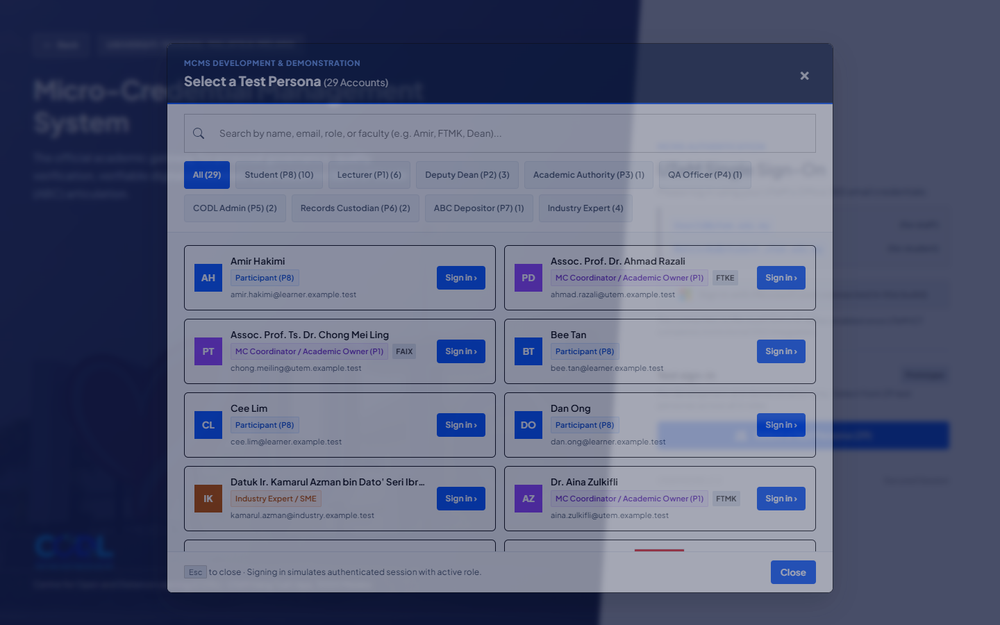
Figure 6.3c: Curriculum Proposal Endorsement View (p2_proposal_endorsement.png)
Formal endorsement interface verifying learning outcome alignment, credit allocations, and generating Senate decision documentation packs.Figure 6.3d: Faculty Programme Overview (p2_transfer_monitor.png)
Dedicated read-only monitoring workspace allowing receiving faculty management to track incoming credit articulation volume, student cohort distributions, and degree completion rates (D-61).Figure 6.3e: Faculty Analytics and Reports (p2_reports_default.png)
Comprehensive institutional reporting suite tracking enrolment demographics, pass rates, credential issuances, and credit transfer volume across academic sessions.
6.4 Senate / Academic Authority (P3)
The supreme academic authority of UTeM reviews and grants final institutional approval for micro-credential offerings, curriculum versions, and credit transfer decisions.
Figure 6.4b: Senate Proposal Approval Queue (p3_approvals_queue.png)
Vetted proposal docket listing endorsed submissions, meeting references, external reviewer recommendations, and statutory accreditation evidence.Figure 6.4c: Senate Credit Transfer Approvals Queue (p3_transfers_queue.png)
Statutory transfer approval docket presenting CODL 9-criterion outcome evaluations for final Senate ratification (Appendix F8) and recording meeting minute citations (D-61).
6.5 QA Officer (P4)
Quality Assurance authorities oversee educational standards, monitoring CQI implementation and compliance against MQA Code of Practice for Programme Accreditation (COPPA).
The Centre for Open and Distance Learning manages system configuration, user role allocations, UCreds platform integrations, and conducts expert 9-criterion credit transfer evaluations.
Figure 6.6a: CODL Administrator Dashboard (p5_dashboard_default.png)
Central administrative console reporting system operational health, integration sync status with UCreds, user role distribution, and active transfer evaluation queues.Figure 6.6b: Curriculum Proposal Verification Workspace (p5_governance_proposals.png)
Administrative verification console ensuring proposals comply with UTeM micro-credential guidelines, credit ceilings, and platform delivery specifications prior to Senate presentation.Figure 6.6c: Credit Transfer Equivalence Evaluation Workspace (p5_transfers_workspace.png)
Rigorous 9-criterion outcome-by-outcome equivalence evaluation interface implementing Appendix F7 without fabrication, assessing syllabus match, assessment rigor, and home credit limits (D-61).Figure 6.6d: User Role Administration (p5_users_roles.png)
Role-Based Access Control console strictly enforcing Appendix H 8-role governance, separation of duties, and faculty institutional scopes.
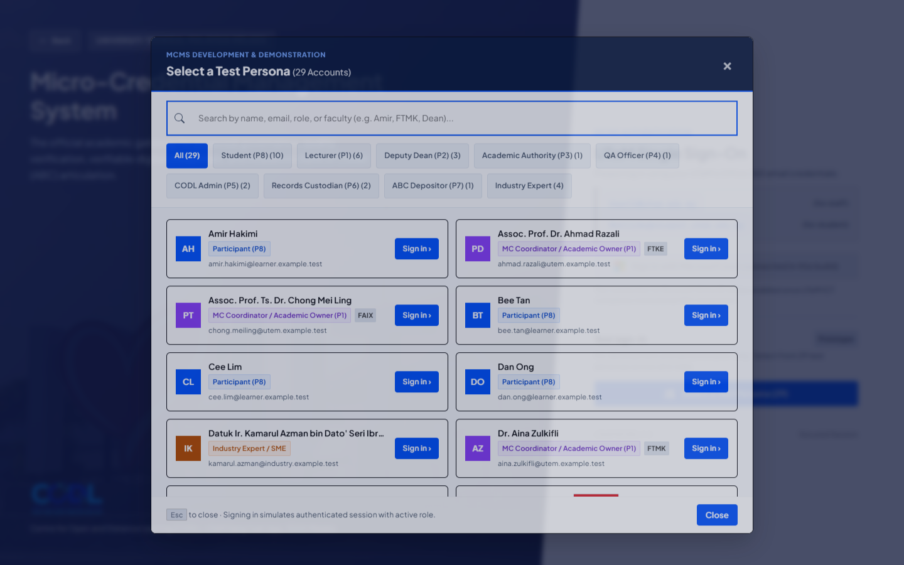
Figure 6.6e: System Reference Data Management (p5_reference_data.png)
Administrative catalog maintaining authoritative academic faculties, accredited degree programmes, course codes, MQF qualification levels, and grading schemes.Figure 6.6f: System Configuration & Policy Settings (p5_settings_default.png)
Audit-tracked configuration panel managing statutory thresholds (e.g. 30% home credit floor, 10-year ABC validity, reminder intervals) with effective dating and change rationale logs.Figure 6.6g: UCreds Learning Platform Exchange (p5_ucreds_exchange.png)
Integration adapter console managing bidirectional synchronization between UCreds LMS course catalogue items, participant rosters, and provisional learning progress marks.
6.7 Records & Credential Custodian (P6)
Registry officers maintain permanent academic record repositories, verify Appendix F2 compliance checklists, and oversee formal physical and digital credential issuance.
Figure 6.7a: Records Custodian Dashboard (p6_dashboard_default.png)
Registry command center managing prepared Academic Credit Records awaiting Appendix F3 confirmation, credential issuance queues, and permanent achievement archives.Figure 6.7b: Formal Credential Issuance Administration (p6_credentials_admin.png)
Registry oversight interface governing batch certificate printing, cryptographic key rotation, and controlled replacement or revocation logging (Appendix F10).
6.8 Authorized ABC Depositor (P7)
Authorized ABC Depositors execute batch consignments to the national Academic Bank of Credit, tracking student consent, consignment references, and reconciliation discrepancies.
Figure 6.8a: Authorized ABC Depositor Dashboard (p7_dashboard_default.png)
Consignment queue consolidating consented ACR records ready for ABC deposit, tracking statutory 10-year credit validity countdowns and batch consignment statuses.Figure 6.8b: ABC Consignment Batch Workspace (p7_deposits_workspace.png)
Batch consignment management interface generating standardized CSV/PDF deposit manifests, logging official ABC deposit references, and recording officer identity snapshots (Appendix F4).Figure 6.8c: ABC Discrepancy Reconciliation Log (p7_discrepancies_default.png)
Reconciliation register tracking rejected or conflicted deposit consignments, mismatch errors, and resolution actions without data destruction.
6.9 External Stakeholders, Authentication & System States
Public verification tools, external reviewer portals, authentication interfaces, and global responsive layouts.
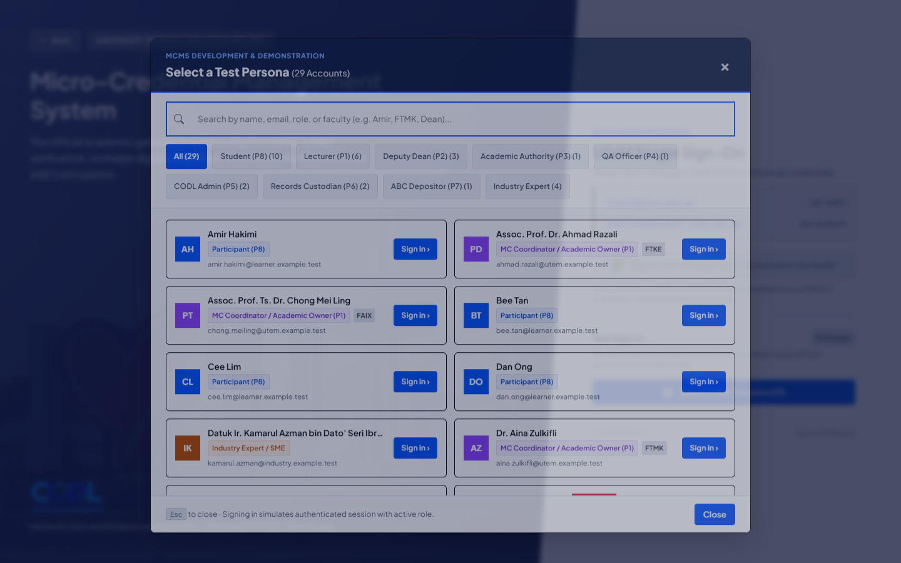
Figure 6.9a: Industry Expert Review Invitations (x2_reviews_invitations.png)
External SME advisory interface restricted strictly to qualitative commentary on competency alignment and workforce relevance, with all voting/approval controls disabled per G 16.7.
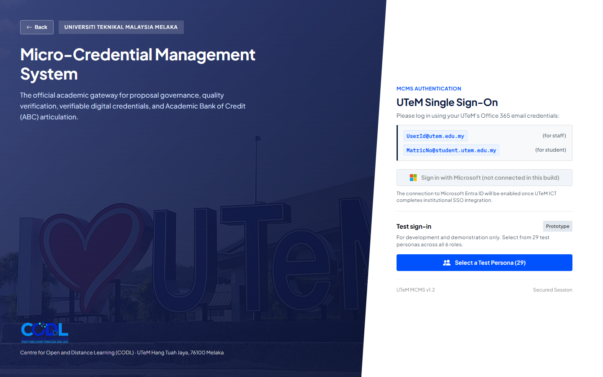
Figure 6.9b: Single Sign-On Portal (auth_signin_default.png)
Linear-Precision authentication gateway displaying UTeM Office 365 format instructions (UserId@utem.edu.my for staff, MatricNo@student.utem.edu.my for students) and single-click language toggle.
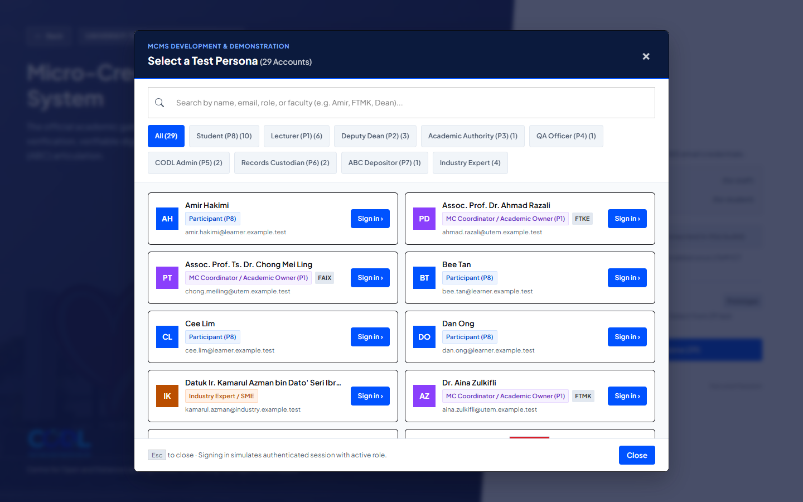
Figure 6.9c: Appendix H Role Filter Pills Modal (auth_personas_modal.png)
Demonstration and testing modal featuring concise role filter pills matching the official Appendix H roles: Student (P8), Lecturer (P1), Deputy Dean (P2), Academic Authority (P3), QA Officer (P4), CODL Admin (P5), Records Custodian (P6), ABC Depositor (P7), and Industry Expert.
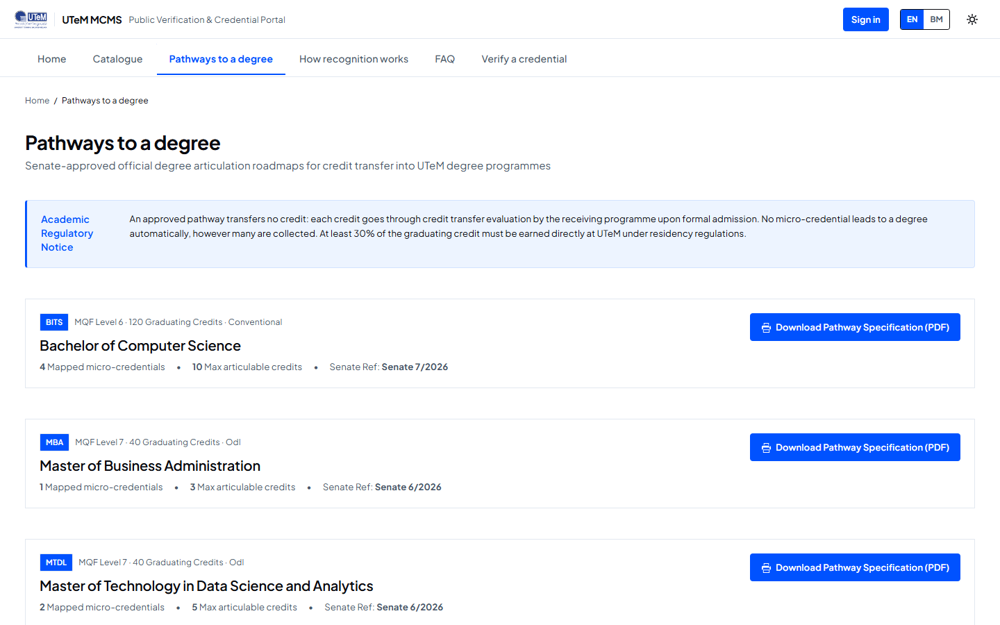
Figure 6.9d: Public Degree Pathways Explorer (public_pathways_default.png)
Publicly accessible exploration tool detailing how accredited micro-credentials stack toward full UTeM undergraduate and postgraduate degrees, clearly noting the 30% home credit floor.
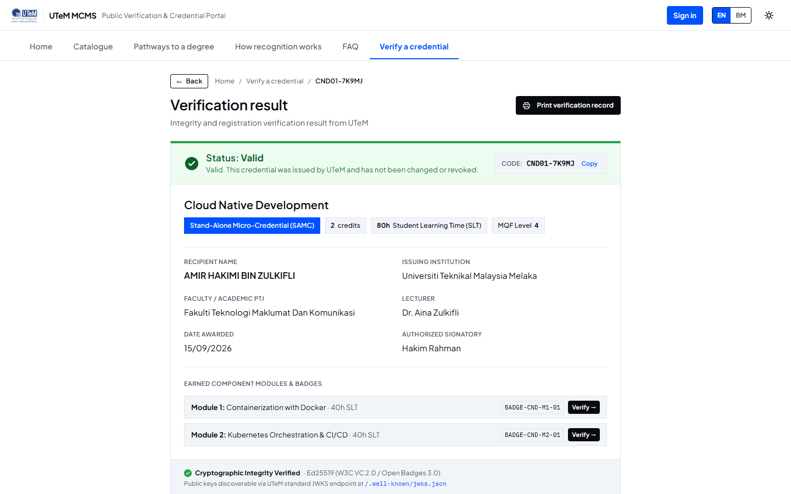
Figure 6.9e: Public Credential Verification Result Slip (public_verify_credential.png)
Authoritative certificate-style result slip with single status seal, copyable Crockford Base32 code, direct cryptographic downloads (.json and .jwt), and statutory PDPA notice.
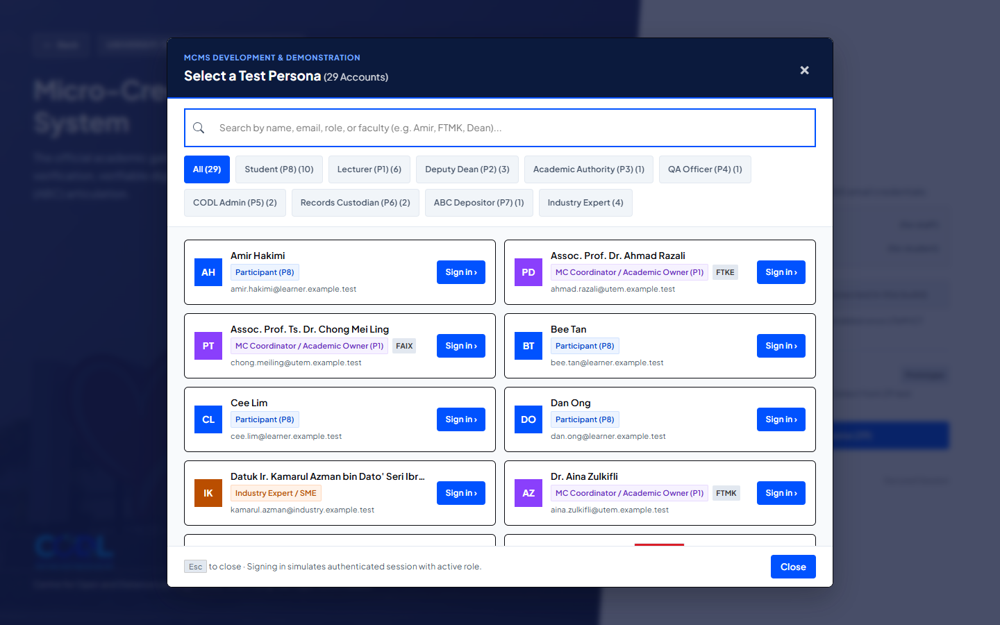
Figure 6.9f: Collapsed Navigation Rail with Pull-Tab Latch (sys_sidebar_collapsed.png)
Collapsed 64px icon rail showing the protruding white latch handle (#btnSidebarPullTab) with flipped chevron icon, expanding screen real estate for complex data tables.
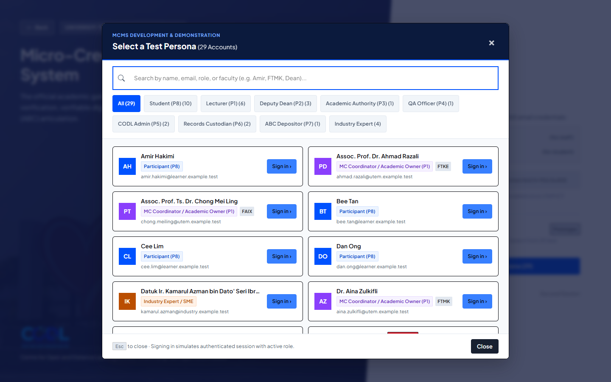
Figure 6.9g: High-Contrast Dark Theme View (sys_dark_theme_dashboard.png)
Native dark theme implementation utilizing deep slate canvas tokens (#070d19), crisp dark borders (#2d3748), and luminescent Electric Cobalt indicators for reduced eye fatigue during administrative sessions.